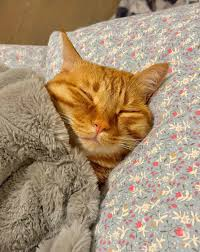
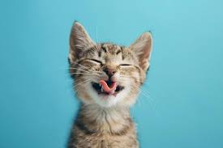
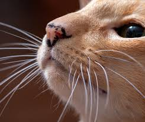

Los gatos pasan aproximadamente el 70% de sus vidas durmiendo. Esto se traduce en unas 13 a 16 horas diarias. Lo hacen para conservar energía para cazar, un instinto que conservan de sus ancestros salvajes.
El ronroneo de un gato no siempre significa que esté feliz. Aunque suele ser señal de relajación, también pueden ronronear cuando están asustados o heridos, ya que la frecuencia de las vibraciones les ayuda a calmarse y sanar tejidos.
Un gato no puede ver directamente debajo de su nariz. Por esta razón, a veces parece que no encuentran la comida que se les ha caído justo delante de ellos; dependen de su olfato y de sus bigotes para detectar cosas tan cercanas.


